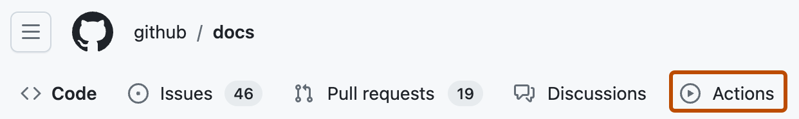

Learn how to create a continuous integration (CI) workflow to build and test your .NET project.
This guide shows you how to build, test, and publish a .NET package.
GitHub-hosted runners have a tools cache with preinstalled software, which includes the .NET Core SDK. For a full list of up-to-date software and the preinstalled versions of .NET Core SDK, see software installed on GitHub-hosted runners.
You should already be familiar with YAML syntax and how it's used with GitHub Actions. For more information, see Workflow syntax for GitHub Actions.
We recommend that you have a basic understanding of the .NET Core SDK. For more information, see Getting started with .NET.
To get started quickly, add a workflow template to the .github/workflows directory of your repository.
GitHub provides a workflow template for .NET that should work for most .NET projects. The subsequent sections of this guide give examples of how you can customize this workflow template.
On GitHub, navigate to the main page of the repository.
Under your repository name, click Actions.

If you already have a workflow in your repository, click New workflow.
The "Choose a workflow" page shows a selection of recommended workflow templates. Search for "dotnet".
On the ".NET" workflow, click Configure.
Edit the workflow as required. For example, change the .NET version.
Click Commit changes.
The dotnet.yml workflow file is added to the .github/workflows directory of your repository.
To use a preinstalled version of the .NET Core SDK on a GitHub-hosted runner, use the setup-dotnet action. This action finds a specific version of .NET from the tools cache on each runner, and adds the necessary binaries to PATH. These changes will persist for the remainder of the job.
The setup-dotnet action is the recommended way of using .NET with GitHub Actions, because it ensures consistent behavior across different runners and different versions of .NET. If you are using a self-hosted runner, you must install .NET and add it to PATH. For more information, see the setup-dotnet action.
name: dotnet package
on: [push]
jobs:
build:
runs-on: ubuntu-latest
strategy:
matrix:
dotnet-version: [ '3.1.x', '6.0.x' ]
steps:
- uses: actions/checkout@v6
- name: Setup dotnet ${{ matrix.dotnet-version }}
uses: actions/setup-dotnet@v4
with:
dotnet-version: ${{ matrix.dotnet-version }}
# You can test your matrix by printing the current dotnet version
- name: Display dotnet version
run: dotnet --version
You can configure your job to use a specific version of .NET, such as 6.0.22. Alternatively, you can use semantic version syntax to get the latest minor release. This example uses the latest minor release of .NET 6.
- name: Setup .NET 6.x
uses: actions/setup-dotnet@v4
with:
# Semantic version range syntax or exact version of a dotnet version
dotnet-version: '6.x'
GitHub-hosted runners have the NuGet package manager installed. You can use the dotnet CLI to install dependencies from the NuGet package registry before building and testing your code. For example, the YAML below installs the Newtonsoft package.
steps:
- uses: actions/checkout@v6
- name: Setup dotnet
uses: actions/setup-dotnet@v4
with:
dotnet-version: '6.0.x'
- name: Install dependencies
run: dotnet add package Newtonsoft.Json --version 12.0.1
You can cache NuGet dependencies for future workflows using the optional cache input. Caching requires a packages.lock.json file. If the action cannot find a matching lock file, it fails.
Before enabling caching:
In the directory containing your project or solution, generate the lock files locally.
dotnet restore --use-lock-file
Commit the generated packages.lock.json files to your repository so they are available when the workflow runs.
For more information, see Locking dependencies in the NuGet documentation.
By default, setup-dotnet looks for a lock file in the repository root. Use cache-dependency-path to specify lock files in subdirectories or multiple lock files. The following example caches the NuGet global-packages folder using lock files throughout the repository, then restores the dependencies in locked mode.
For more information, see Dependency caching reference.
steps:
- uses: actions/checkout@v6
- name: Setup dotnet
uses: actions/setup-dotnet@v4
with:
dotnet-version: '6.x'
cache: true
cache-dependency-path: '**/packages.lock.json'
- name: Restore dependencies
run: dotnet restore --locked-mode
Note
Depending on the number of dependencies, it may be faster to use the dependency cache. Projects with many large dependencies should see a performance increase as it cuts down the time required for downloading. Projects with fewer dependencies may not see a significant performance increase and may even see a slight decrease due to how NuGet installs cached dependencies. The performance varies from project to project.
You can use the same commands that you use locally to build and test your code. This example demonstrates how to use dotnet build and dotnet test in a job:
steps:
- uses: actions/checkout@v6
- name: Setup dotnet
uses: actions/setup-dotnet@v4
with:
dotnet-version: '6.0.x'
- name: Install dependencies
run: dotnet restore
- name: Build
run: dotnet build --no-restore
- name: Test with the dotnet CLI
run: dotnet test --no-build
After a workflow completes, you can upload the resulting artifacts for analysis. For example, you may need to save log files, core dumps, test results, or screenshots. The following example demonstrates how you can use the upload-artifact action to upload test results.
For more information, see Store and share data with workflow artifacts.
name: dotnet package
on: [push]
jobs:
build:
runs-on: ubuntu-latest
strategy:
matrix:
dotnet-version: [ '3.1.x', '6.0.x' ]
steps:
- uses: actions/checkout@v6
- name: Setup dotnet
uses: actions/setup-dotnet@v4
with:
dotnet-version: ${{ matrix.dotnet-version }}
- name: Install dependencies
run: dotnet restore
- name: Test with dotnet
run: dotnet test --no-restore --logger trx --results-directory "TestResults-${{ matrix.dotnet-version }}"
- name: Upload dotnet test results
uses: actions/upload-artifact@v4
with:
name: dotnet-results-${{ matrix.dotnet-version }}
path: TestResults-${{ matrix.dotnet-version }}
# Use always() to always run this step to publish test results when there are test failures
if: ${{ always() }}
You can configure your workflow to publish your .NET package to a package registry when your CI tests pass. You can use repository secrets to store any tokens or credentials needed to publish your binary. The following example creates and publishes a package to GitHub Packages using dotnet core cli.
name: Upload dotnet package
on:
release:
types: [created]
jobs:
deploy:
runs-on: ubuntu-latest
permissions:
packages: write
contents: read
steps:
- uses: actions/checkout@v6
- uses: actions/setup-dotnet@v4
with:
dotnet-version: '6.0.x' # SDK Version to use.
source-url: https://nuget.pkg.github.com/<owner>/index.json
env:
NUGET_AUTH_TOKEN: ${{secrets.GITHUB_TOKEN}}
- run: dotnet build --configuration Release <my project>
- name: Create the package
run: dotnet pack --configuration Release <my project>
- name: Publish the package to GPR
run: dotnet nuget push <my project>/bin/Release/*.nupkg